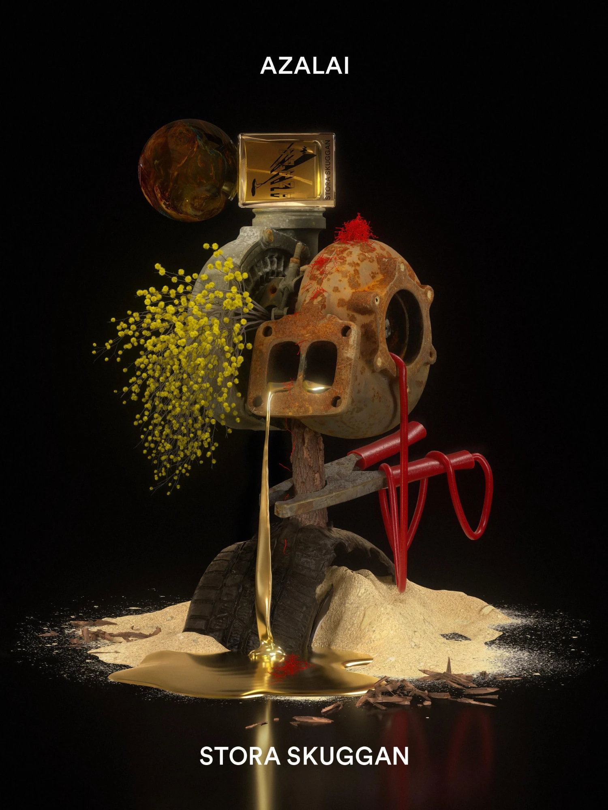
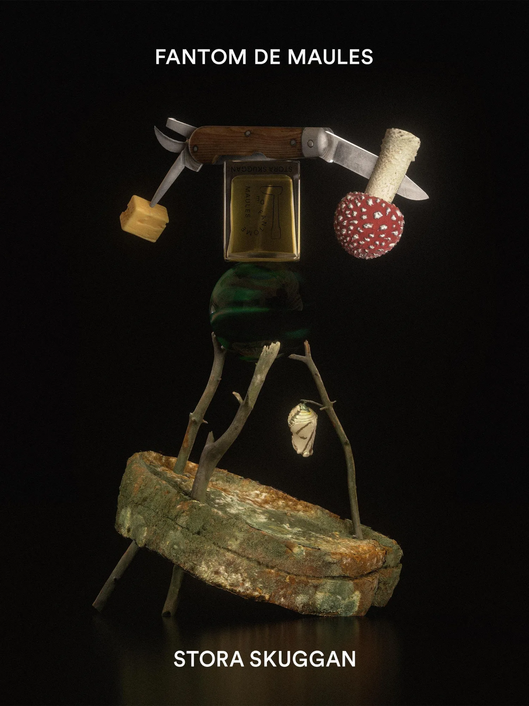
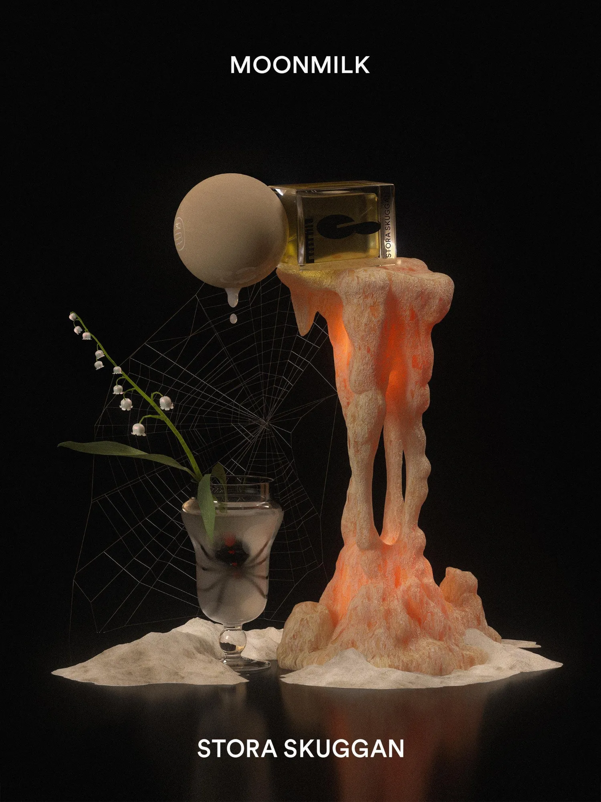
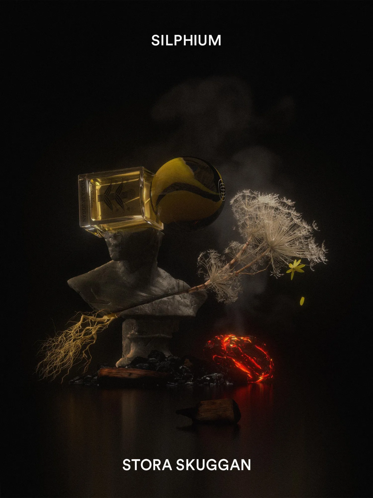
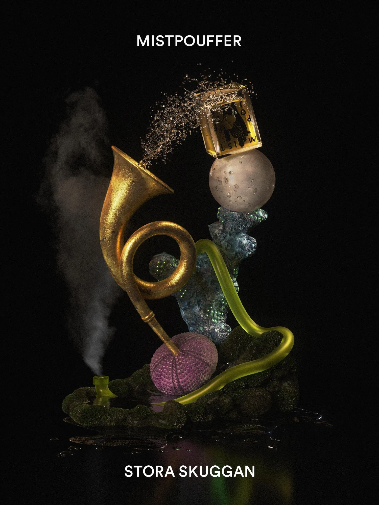

Nature Morte – Stora Skuggan
A collection of 3D rendered artworks for perfume house Stora Skuggan. This series is based on each perfume’s ingredients and mystical backstories.
- Client
- Stora Skuggan
- Year
- 2021
- Medium
- 3D rendered artworks
- Series
- Thumbsucker, Azalai, Fantom de Maules, Moonmilk, Silphium, Mistpouffer





